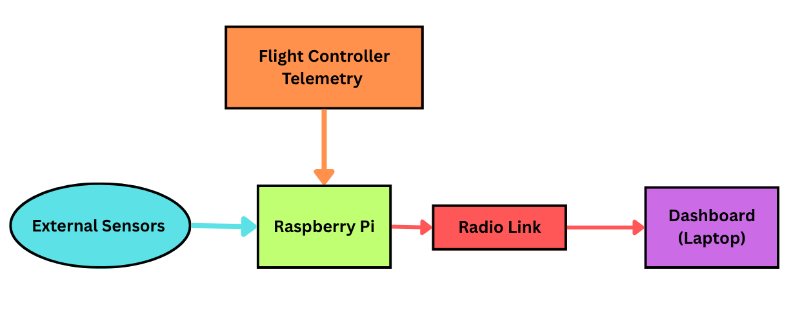
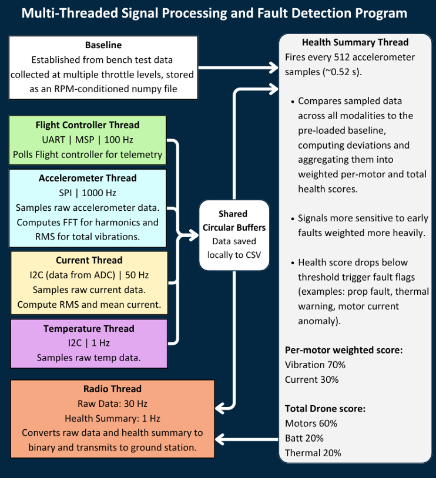
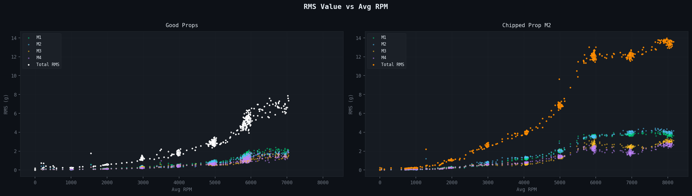
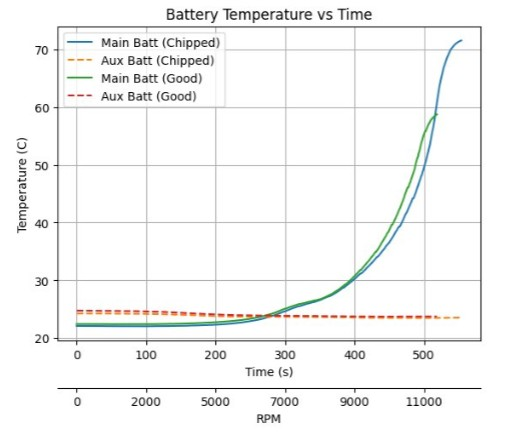
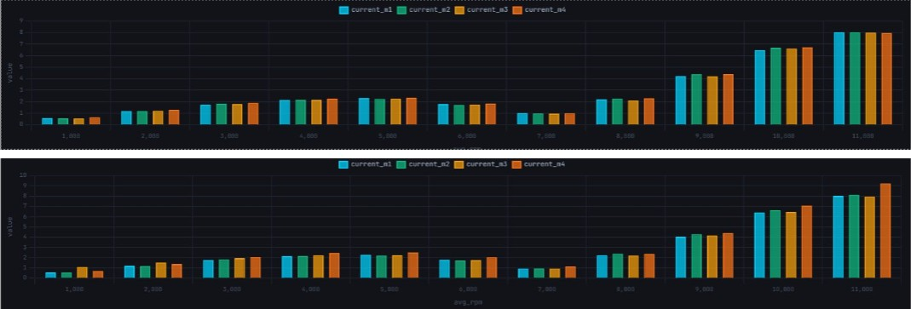
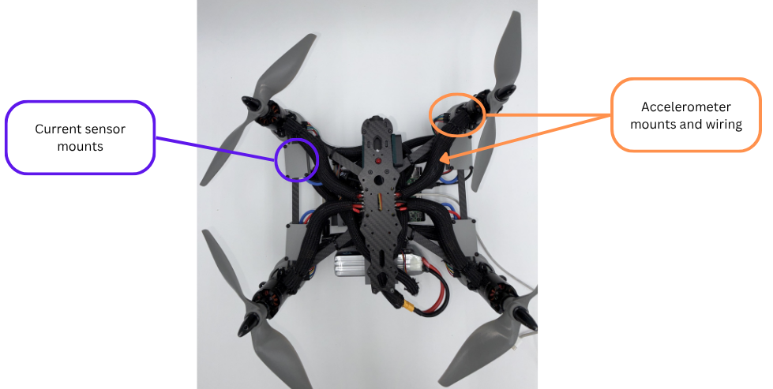
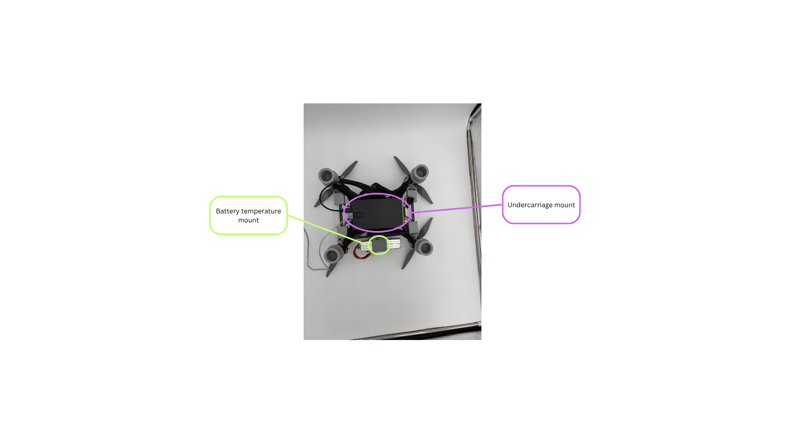
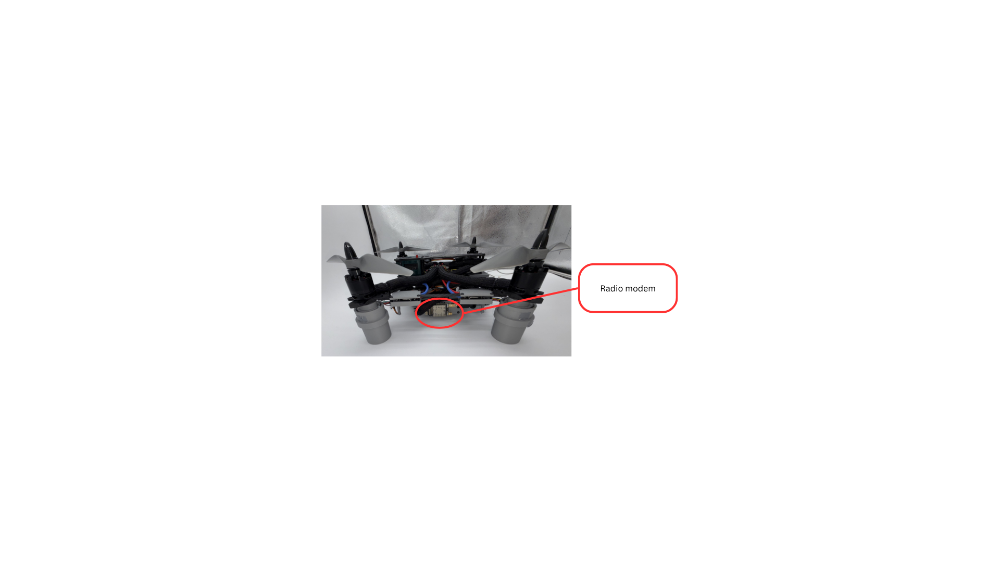

Senior Design ECE Team 2608 · Sponsored by Belcan Engineering · UConn, 2025–2026
This was my senior design project, completed over two semesters as part of a multidisciplinary team sponsored by Belcan Engineering. We built a real-time health monitoring and diagnostics system for Belcan's quadcopter UAV platform, a modular add-on that collects vibration, current, and temperature data onboard and streams it wirelessly to a ground station dashboard.
The goal was to close a capability gap: the drone's stock flight controller provided basic telemetry (RPM, battery voltage), but nothing about individual motor health, vibration anomalies, or battery thermal behavior. Our system adds that visibility.
Paper-obstruction fault test on the bench. A small piece of paper is briefly held against a motor's propeller to simulate a debris strike. The health-scoring algorithm localizes the fault to the affect motor within seconds: its score drops from above 90% to roughly 25% while the other three motors remain healthy.
UAV components like motors and batteries often show early signs of failure through vibration changes, rising temperatures, or abnormal current draw, but standard flight telemetry doesn't always capture this. Without visibility into these signals, operators can't detect faults in real time, and troubleshooting after an incident is slow and reactive.
Belcan needed a lightweight, modular system that could run alongside the existing flight controller without interfering with it, collecting diagnostic data and alerting operators when something looks wrong.
The system centers on a Raspberry Pi 5 mounted to the drone's undercarriage. It interfaces with four sensor types simultaneously and runs six concurrent Python threads, each handling a distinct responsibility:
The system runs entirely on an auxiliary battery, independent of the propulsion battery, so it never interferes with flight controller operation.

Simplified System block diagram
Three significant changes to the original first-semester design happened during second-semester integration. These weren't course corrections from a failed plan, they were real-world adjustments based on what we encountered when we actually started building.
Vibration analysis
Each accelerometer runs at ~987 Hz, satisfying the Nyquist requirement derived from the motor's blade-pass frequency (~543 Hz at full throttle). For every completed 1024-sample FFT window with 50% overlap, the health thread extracts per-axis RMS, the 1x rotational harmonic, and the 2x blade-pass harmonic, along with the FFT target frequency computed from live RPM telemetry so it tracks motor speed in real time.
Health scoring
Each feature is compared against an RPM-conditioned baseline built from known-good bench runs. I implemented a bounded z-score: if a measurement falls within the expected range, the score is zero; outside it, the score reflects how far the measurement deviates from the nearest bound, normalized by local standard deviation. Raw z-scores are exponentially smoothed (α = 0.30) to filter noise without killing response speed.
Per-motor health combines vibration (70%) and current deviation (30%). A persistence counter requires 3 consecutive windows above the fault threshold before a motor is transitioned to "confirmed fault," preventing false alarms from single noisy samples. Drone-level health aggregates motor health (60%), battery health (20%), and thermal health (20%).
Battery thermal monitoring
Rather than monitoring absolute temperature alone, I implemented a current-driven thermal model that computes expected dT/dt based on current draw and compares it to actual temperature rise. This flags abnormally fast heating before absolute temperature thresholds are approached, providing earlier warning when the battery is being stressed.
RF telemetry
Two binary packet formats are transmitted over the RFD900x 915 MHz radio link: a 30 Hz raw sensor packet (RPM, current, voltage, temperatures, sequence number) and a 1 Hz health packet (per-motor scores, status labels, fault flags, primary-fault motor index). Each packet has a unique two-byte header so the ground station can demultiplex the streams. All data is also logged locally to CSV on the Pi.

Onboard data flow chart
The key validation test was a paper-obstruction fault: with all four motors running normally, a small piece of paper was briefly held against motor propellers to simulate a debris strike. Motor health scores dropped from above 90% to approximately 25% within a few seconds. The persistence counter triggered after 3 consecutive fault windows, transitioning the affected motor to "confirmed fault" and correctly identifying it as the primary fault candidate. Structurally connected motors showed a milder dip and were labelled a structural neighbor, consistent with vibration coupling through the airframe. The motors on the opposite side of the drone were unaffected.
The system correctly localized a transient fault to the affected motor within seconds, with no false positives on the three healthy motors, from raw sensor data through FFT, z-scoring, persistence, and status assignment.

Vibration RMS: good vs chipped props

Battery temperature vs time

Per-motor current vs Motor RPM (Top: Good Props, Bottom: Taped Props)
The sensor stack, wiring, and mounting were designed and assembled by the ECE and ME/MDE teams. I was responsible for all electrical integration: soldering the sensor connections, routing wiring to the Pi, and verifying signal integrity on each communication bus.


Top: accelerometer mounts & current sensor positions | Bottom: Pi, ADC, auxiliary battery mount

Side view - RFD900x radio modem with antenna